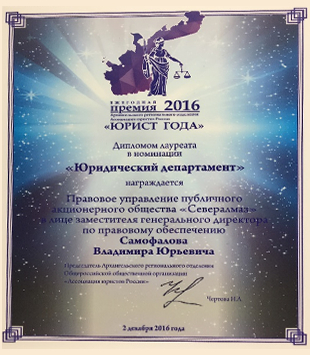

Мы постоянно совершенствуем условия и качество
работы на предприятиях
Кадровая политика
ПАО «Севералмаз» является победителем регионального этапа всероссийского конкурса «Российская организация высокой социальной эффективности» в номинации «За развитие кадрового потенциала в организациях производственной сферы» в Архангельской области.
Большое внимание уделяется повышению квалификации персонала, обучению и переподготовке квалифицированных кадров по рабочим профессиям. Общество активно взаимодействует с учреждениями профессионального образования. Повышение квалификации направлено на последовательное совершенствование профессиональных знаний, умений и навыков, рост мастерства по имеющейся у работника профессии.
Списочная численность работников
с высшим/средним/специальным образованием
к списочной численности работников
к списочной численности работников
1630
29,4% / 22,5% / 48,1%
2014 год
при текучести кадров - 7%
при текучести кадров - 7%
1684
30,4% / 23,1% / 46,5%
2015 год
при текучести кадров - 5,4%
при текучести кадров - 5,4%
1683
30,8% / 23,1% / 46,1%
2016 год
при текучести кадров - 3,6%
при текучести кадров - 3,6%
Успехи и достижения ПАО “Севералмаз”
Региональная награда “Достояние Севера”
текст
Ежегодная премия “Юрист года Архангельской области”

В декабре 2016 года в зале интеллектуального центра САФУ имени М.В. Ломоносова состоялось торжественное вручение ежегодной премии "Юрист года Архангельской области. "Премия была присуждена лучшим юристам региона по 9 номинациям и 2 спецноминациям.
Правовое управление ПАО «Севералмаз» было удостоено премии «Юрист года Архангельской области» за 2016 год в номинации «Юридический департамент».
Премия является признанием заслуг высококвалифицированных юристов Архангельской области.
Развитие кадрового потенциала в организациях производственной сферы
текст
Повышение операционной эффективности ПАО “Севералмаз”
текст
Преимущества работы в ПАО “Севералмаз”
Обучение и развитие персонала
В Обществе созданы условия для профессионального роста и развития сотрудников. Работник могут повышать свою квалификацию как на базе собственного Учебного центра, так и в сторонних учебных заведениях. Кроме того, на базе Учебного центра систематически проводятся тренинги, направленные на улучшение социально- психологического климата в коллективе.
Конкурентоспособная заработная плата
Общество гарантирует своим работникам стабильную, своевременную оплату труда.
Медицинское страхование
Ежегодно за счет предприятия сотрудники проходят профилактическое лечение в санаториях области. Все сотрудники Общества имеют дополнительное медицинское страхование.
Обширный социальный пакет
Общество обеспечивает обширный спектр социальных льгот, направленных на обеспечение социальной стабильности и улучшение качества жизни работников. Ежегодно к Дню пожилого человека вручаются подарки бывшим работникам Общества. Особо нуждающимся работникам (бывшим работникам) оказывается благотворительная помощь.»
Социально-бытовая сфера и охрана труда
Для проживания работников на вахте созданы комфортные условия. Благоустроенные общежития, столовая с трехразовым питанием за счет средств работодателя, здравпункт, спортивный комплекс.
Соблюдаются необходимые нормы охраны труда на производстве. Работникам выдаются средства индивидуальной защиты, спецодежда и обувь с учетом сезонности.
Корпоративные мероприятия, поддержка здорового и образа жизни
Ежегодно празднуются профессиональные праздники, для сотрудников вместе с их семьями проводятся спортивно – развлекательные мероприятия. На территории вахтового поселка функционирует спортивный комплекс.
Социальный пакет
На работников Общества распространяются все гарантии и компенсации в соответствии с Трудовым кодексом Российской Федерации.
Кроме того, работникам Общества:
- производится плановая ежеквартальная индексация заработной платы,
- дополнительное медицинское обеспечение по Программе ДМС,
- организуется оздоровление и санаторно-курортное лечение работников,
- оказывается материальную помощь в случае рождения ребенка,
- предоставляется льгота по оплате услуг в детских дошкольных учреждениях многодетным семьям,
- производится дополнительная ежемесячная выплата работникам, находящимся в отпуске по уходу за ребенком в возрасте от 1,5 до 3 лет,
- оказывается материальная помощь в случае смерти близких родственников работника
Социально-бытовая сфера и охрана труда
Для проживания работников на вахте созданы комфортные условия. Благоустроенные общежития, столовая с трехразовым питанием за счет средств работодателя, здравпункт, спортивный комплекс.
Соблюдаются необходимые нормы охраны труда на производстве. Работникам выдаются средства индивидуальной защиты, спецодежда и обувь с учетом сезонности.
Адаптация
Адаптация новичка включает в себя: знакомство с производственными особенностями компании, включение в коммуникативные сети, знакомство с персоналом, корпоративными особенностями коммуникации, корпоративной этикой, правилами поведения, а также практическое знакомство нового работника со своими обязанностями и требованиями, которые к нему предъявляются со стороны организации.
Непосредственный руководитель проводит ознакомление новичков с предприятием и его историей, кадровой политикой, условиями труда и правилами, объясняет задачи и требования, предъявляемые к работе, вводит работника в рабочую группу. Вновь принятый работник также получает помощь и рекомендации со стороны опытных коллег, а в некоторых случаях руководитель назначает ему наставника.
Наряду с мероприятиями, направленными на ввод работника в новую для него среду (должность, коллектив, характер работы и пр.), проводится работа по организации более успешной адаптации психологом.
Данная работа включает в себя следующие этапы:
- Первичная психологическая диагностика или тестирование, которое направлено не только на профессиональный психологический отбор, но и на диагностику индивидуальных особенностей, оказывающих влияние на особенности прохождения адаптационного процесса.
- По результатам диагностики формируется заключение, в котором указываются рекомендации работнику и руководителю о том, на что надо обратить внимание при адаптации новичка.
- Этап сопровождения и анализа успешности прохождения первичной профессиональной адаптации. Данный этап включает в себя: а) Проведение индивидуальных психологических бесед, консультаций, коучинговых сессий, тренингов с работниками предприятия по запросу самих работников или их уководителей; б) Оценка адаптации новичка через три и шесть месяцев после трудоустройства.
Судить об успешности прохождения первичной профессиональной адаптации можно с помощью ряда критериев:
- удовлетворенность выполняемой работой;
- установление деловых отношений с руководством;
- социально-психологическая совместимость (вхождение в коллектив, принятие целей и внутреннего распорядка организации);
- успешность выполняемой деятельности;
- своевременность и безошибочность выполняемой деятельности;
- умение не создавать предпосылки себе и другим для травм и аварий;
- осуществление деятельности без угрозы для здоровья.
Данная оценка формируется на основании анализа заполненной работником Анкеты адаптации работника и Анкеты оценки работника руководителем, которую заполняет его руководитель.
в) Для более успешной адаптации в настоящее время разработан корпоративный карманный справочник новичка.
Он знакомит новых сотрудников с принципами и правилами работы организации и рассказывает о ее деятельности. Справочник новичка включает общие сведения, связанные с условиями труда и быта в организации, перечень лиц, к которым новые сотрудники могут обратиться по тем или иным вопросам (с указанием номеров
Коллективный договор
Коллективный договор предоставляет работникам льготы, гарантии и компенсации, улучшающие положение работников по сравнению с действующим трудовым законодательством Российской Федерации.
В Коллективном договоре предусмотрены такие льготы как:
- Поощрение работников в связи с юбилейными датами и профессиональными праздниками.
- Опережающая ежеквартальная индексация заработной платы в соответствии с прогнозным уровнем инфляции.
- Обеспечение работников, работающих вахтовым методом, ежедневным трехразовым горячим питанием бесплатно.
Условия работы
Перейти в раздел